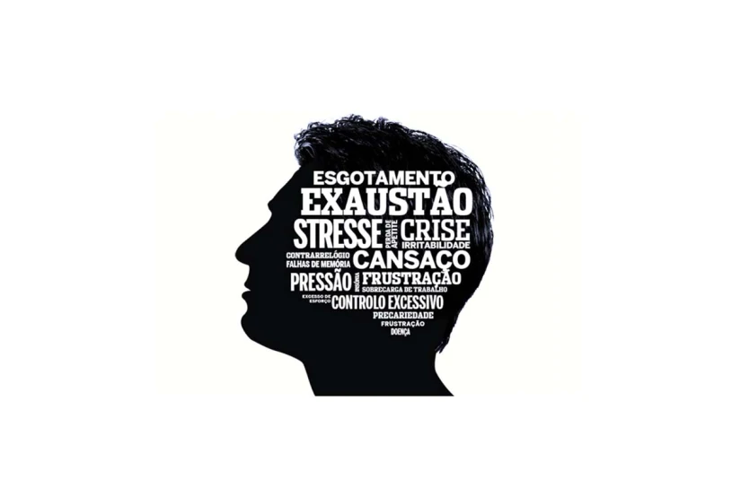

Burnout: Quando o Corpo Clama e a Alma Desperta

Burnout não é só cansaço extremo. É um grito profundo do corpo e da alma pedindo resgate, um colapso do seu sistema interno. É o exato momento em que o código da sua vida precisa ser reescrito, um sinal claro de que você se desconectou da sua verdadeira essência.
O que é a Síndrome de Burnout? Definição e Principais Sinais
Segundo a Organização Mundial da Saúde (OMS), o burnout é oficialmente reconhecido como uma síndrome resultante do estresse crônico no local de trabalho que não foi gerenciado com sucesso. Ela se manifesta em três dimensões principais e interligadas:
- 1. Esgotamento Emocional (Exaustão Profunda): Você acorda cansado, sem energia, como se a bateria estivesse sempre no vermelho, independentemente de quanto você durma. Sente uma sensação avassaladora de exaustão física e mental, sem conseguir se recuperar. 
- 2. Despersonalização (Cinismo ou Distanciamento): Começa a parecer que você virou um robô. Há um sentimento de distanciamento, cinismo ou indiferença em relação ao seu trabalho e às pessoas ao seu redor. Você se sente desconectado de si e dos outros, tornando-se menos empático ou mais irritadiço.
- 3. Baixa Realização Pessoal (Sensação de Ineficácia): Nada mais parece fazer sentido ou trazer orgulho. Sente uma diminuição da sua capacidade profissional, uma perda de confiança em suas habilidades e uma percepção de que seus esforços não geram resultados positivos.
Para mais detalhes sobre a definição oficial, você pode consultar a Classificação Internacional de Doenças (CID-11) da OMS sobre Burnout.
O Burnout como um Alerta Crucial do seu Sistema Interno
O burnout não surge do nada; é a voz da sua essência que cansou de ter seus sinais ignorados. É um chamado desesperado para parar, reavaliar e se reconectar. Quando o externo (pressões, demandas, expectativas alheias) domina demais, o interno (sua intuição, seus valores, sua paz) se apaga, levando o corpo a travar e a mente a se perder. É um sinal claro de que você está vivendo desalinhado com quem realmente é.

Sinais Iniciais: Como Saber se o Burnout Está Batendo à Sua Porta?
É fundamental reconhecer os primeiros sinais para agir antes que o quadro se agrave. Fique atento quando:
- Cansaço Persistente: Você acorda com o peito pesado, a mente acelerada e uma sensação de fadiga que não melhora com o descanso.
- Irritabilidade e Frustração: Pequenas coisas te tiram do sério. Você se irrita com facilidade, sente-se impaciente e, muitas vezes, acaba se afastando das pessoas que ama.
- Dificuldade de Concentração: Qualquer tarefa, por mais simples que seja, parece uma montanha intransponível. A concentração diminui e a tomada de decisões se torna exaustiva.
- Perda de Propósito e Desengajamento: Sente que perdeu o contato com seu propósito e essência, o que antes te motivava agora parece sem sentido. Há uma falta de engajamento tanto no trabalho quanto na vida pessoal.
- Sintomas Físicos Recorrentes: Dores de cabeça frequentes, problemas digestivos, insônia, alterações no apetite e enfraquecimento do sistema imunológico podem ser manifestações físicas do estresse crônico.
O Caminho para Reprogramar Seu Sistema e Reconstruir seu Bem-Estar
Sair do burnout não é apenas descansar; é reescrever o código da sua existência. É um processo de transformação profunda que começa com a reconexão com sua frequência interna. Comece a aplicar esses pilares:
- Desligue dos Ruídos Externos: Dedique um tempo diário para se desconectar de telas, notícias e cobranças externas. Conecte-se com seu silêncio interno através de momentos de quietude, observação ou meditação.
- Respire Profundamente e Ancore-se: A respiração é sua âncora para o presente. Pratique exercícios de respiração consciente por alguns minutos ao dia para acalmar o sistema nervoso, oxigenar o cérebro e reduzir a ansiedade.
- Movimente o Corpo com Intenção e Consciência: Atividades físicas não são apenas sobre queimar calorias. Pratique yoga, caminhada na natureza, dança ou qualquer movimento que traga prazer e te conecte ao seu corpo, liberando tensões acumuladas.
- Reavalie Seus Limites e Prioridades: Reflita sobre o que realmente te nutre e o que te drena. Aprenda a dizer "não" ao que não serve e a priorizar sua energia para o que importa. Defina limites claros no trabalho e na vida personal.
- Busque Práticas Integrativas: Explore terapias e práticas que unam corpo, mente e espírito, como a meditação guiada, mindfulness, reiki, acupuntura ou outras que ressoem com você. Elas podem oferecer um suporte valioso na sua jornada de recuperação.
Prevenção de Burnout: Cultivando um Estilo de Vida Resiliente
Não espere o esgotamento chegar. A prevenção é a melhor estratégia. Cultive hábitos diários que fortaleçam seu bem-estar:
- Gestão do Tempo e Limites: Organize suas tarefas, delegue quando possível e estabeleça horários claros para trabalho e descanso.
- Autocuidado Diário: Inclua pequenas pausas, hobbies e momentos de lazer na sua rotina.
- Conexões Sociais: Mantenha contato com amigos e familiares, compartilhando suas experiências.
- Alimentação e Sono: Cuide da sua nutrição e garanta um sono de qualidade, fundamentais para a recuperação energética.
Quando Procurar Ajuda Profissional?
Se os sintomas de burnout persistirem e estiverem afetando significativamente sua vida pessoal e profissional, é fundamental buscar apoio. Um psicólogo, psiquiatra ou terapeuta holístico qualificado pode oferecer o suporte e as ferramentas necessárias para a recuperação e o reequilíbrio. Lembre-se, pedir ajuda é um sinal de força e autocuidado.
Burnout: O Convite para Renascer e Despertar seu Eu Autêntico
Essa crise, por mais dolorosa que seja, é o chamado para "matar o personagem falso" que você tentou ser e despertar para o seu verdadeiro Eu Autêntico. É a chance de realinhar sua vida, onde o corpo, o código (sua mente, crenças) e o espírito vibram em harmonia, em sua mais pura e potente frequência. Permita-se essa transformação.